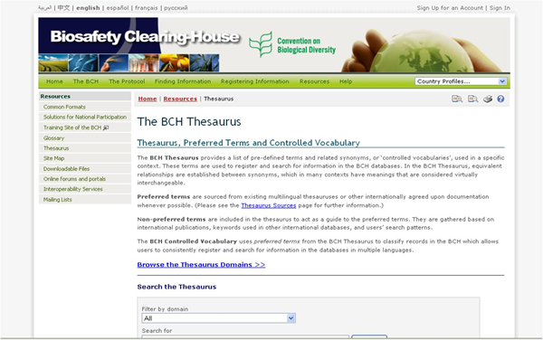
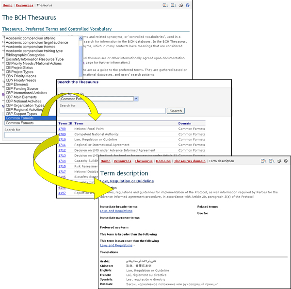
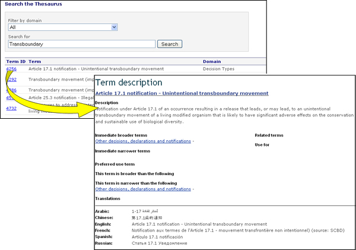

El Tesauro consiste en una lista de términos predefinidos y sinónimos relacionados, o ‘vocabularios controlados’, usados en un contexto específico. Estos términos son utilizados para registrar o buscar información en las bases de datos del CIISB.
-
Un término más amplio indica las clases más generales a las que el término pertenece en el vocabulario controlado; todo los que es cierto sobre un término, también lo es sobre su término más amplio (por ejemplo, Gossypium es más amplio que Gossypium hirsutum).
-
Un término más acotado indica un término más específico o miembro de una clase en el vocabulario controlado (por ejemplo, Gossypium hirsutum es más acotado que Gossypium).
-
Un término no preferido es un sinónimo de un término de uso preferido en el vocabulario controlado que tiene un significado equivalente al término de uso preferido, pero no es usado para la indexación de registros (por ejemplo, “bananas” es un término no preferido para “banana”).
-
Un término de uso preferido en el vocabulario controlado es el término seleccionado entre varios sinónimos para ser utilizado a efectos de la indexación y la búsqueda. Este término está traducido a los seis idiomas de la ONU para habilitar la funcionalidad multilenguaje del CIISB.
-
Un término relacionado trae a colación términos en el vocabulario controlado que están asociados por significados superpuestos u otras relaciones (por ejemplo, nombres científicos y comunes de los organismos).
A través del enlace Tesauro de la página Recursos o en el menú de recursos a la izquierda de la pantalla se accede a la página del Tesauro del CIISB. Dicha página proporciona funcionalidades para buscar términos y para explorar todos los términos en el tesauro.

Los términos en el Tesauro del BCH están organizados en dominios de términos, cada uno de ellos conteniendo una lista de términos. La sección Search the Thesaurus proporciona un menú desplegable para seleccionar en qué dominio se desea buscar los ítems. También hay un cuadro para buscar términos específicos. Para buscar términos, ingrese el dominio y/o la(s) palabra(s) clave(s) específica(s) y haga clic en el botón Buscar.
En la lista de los resultados, al hacer clic en ID del Término para un determinado término, se mostrará más información sobre su utilización en el Portal Central del CIISB. Esto conduce al usuario a la página de Descripción de Términos, la cual proporciona detalles sobre el significado del término y su utilización en el Portal Central del CIISB. A su vez dicha página comprende el uso de términos más amplios, más restringidos y los términos preferidos, así como las traducciones en los seis idiomas oficiales de la ONU. La utilización preferida del término en el vocabulario controlado es un término seleccionado entre los sinónimos que serán utilizados para indexar y con el fin de recuperar. Por ejemplo, en el CIISB el término maize es el término preferido sobre el término corn.

Ejemplo: Si un usuario desea comprender el uso del término transfronterizo en las actividades relacionadas con el Protocolo, el usuario debe seleccionar “All” en el cuadro Filter by Domain e ingresar transfronterizo en el cuadro de Búsqueda, en la página Búsqueda en el Tesauro. Haga clic en el botón Buscar, y se desplegará una lista de registros que describen la utilización del término transfronterizo en los diferentes dominios dentro del Portal Central del CIISB. Los resultados de la búsqueda (en Marzo 2010) despliegan cinco usos del término en cuatro dominios dentro del CIISB.

El enlace fuentes del Tesauro proporciona más información concerniente a las fuentes en las cuales se basan los términos del Tesauro y sus traducciones.